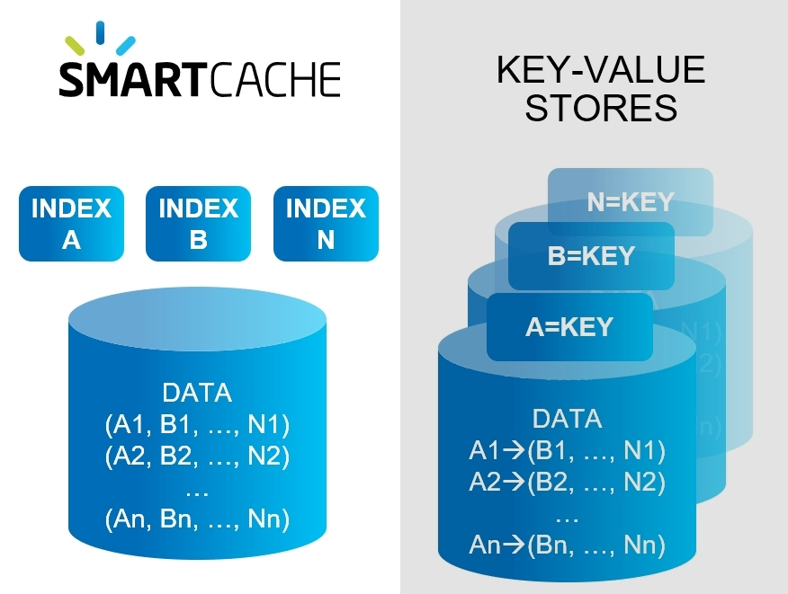
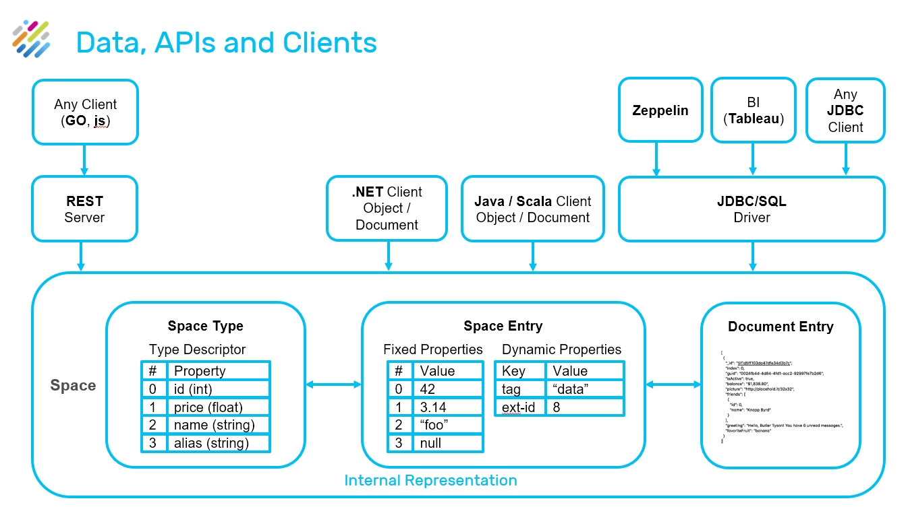

Smart Cache provides fast, scalable cache from any data store. It is fully SQL-99 compliant, and can connect in one click to any operational data store. Additionally it provides out-of-the-box advanced persistency options..
Overview diagram of Smart Cache
 One-Click Connect
One-Click Connect<<<show slides of index hits and footprints ????? >>>
 Rule-Managed Data Tiers
Rule-Managed Data TiersData is stored in multiple data storage tiers — hot (in-memory), warm (SSD), and cold
User-defined business rules allows you to place the most important data in "hot" storage (RAM), while other data can be in "warm" (SSD) or "cold" (HD) storage.

"Important" does not necessarily mean "most frequently accessed" — for example, your business rules may place premium customers in hot storage, even if their data is less frequently required.
Distributed server-side data aggregation and code co-location provides high concurrency, full data integrity and reduces networking and serialization overhead.

When the objects are written to the Data Grid, they are routed to the proper partition, according to a predefined attribute in the object that acts as the routing index
Content-Based Routing
— Partitioning is done according to routing field @SpaceRouting
Formula: hash(@SpaceRouting) modulo (partition count)+1

Unlike simple key-value data stores, Smart Cache uses secondary, tertiary, ... n-ary indexes to organize your data.
This means that where a key-value approach would duplicate the entire data store for each defined index, Smart Cache allows a virtually unlimited number of indexes to be maintained — with very little RAM or processing overhead.

Perform an aggregation activity across data stored within space Aggregators are executed by iterating the internal data grid structure that maintains the space objects Out of the box aggregators such as SUM, AVG, MIN, GROUP BY, etc. as well as CUSTOM AGGREGATION LOGIC Fast scan - No materialization of the original user data grid object when performing this iteration

Enterprise ready designed for 99.999% availability and data replication, and enterprise security
 AIOps
AIOpsUser-defined rules can automatically scale up/down or scale out/in when system demands change.
For example a rule could state:
When the RAM in use exceeds 80% of the total currently allocated RAM for more than 2 minutes, scale up the RAM by a factor of 4.
Rules can also be time-dependent, for example automatically changing storage allocations before and after Black Friday or other times when unusual transaction volumes may occur.
High performance compute engine with millisecond response time for digital applications

Smart Cache Internal Data Stores
Smart Cache supports the full SQL-99 standard, allowing complex queries to be performed with optimal speed and minimal memory footprint. Custom SDK calls that use standard SQL requests can be handled without requiring source code changes.
Smart Cache's Ops Manager GUI provides built-in connectors to the most popular databases:

Database tables can be imported as-is, or can be limited to selected columns and other properties using the Ops Manager GUI, and without writing custom code.
Data sources can be on-prem, in the cloud, or a hybrid combination of cloud and on-prem.
Event Processing |

|
Using